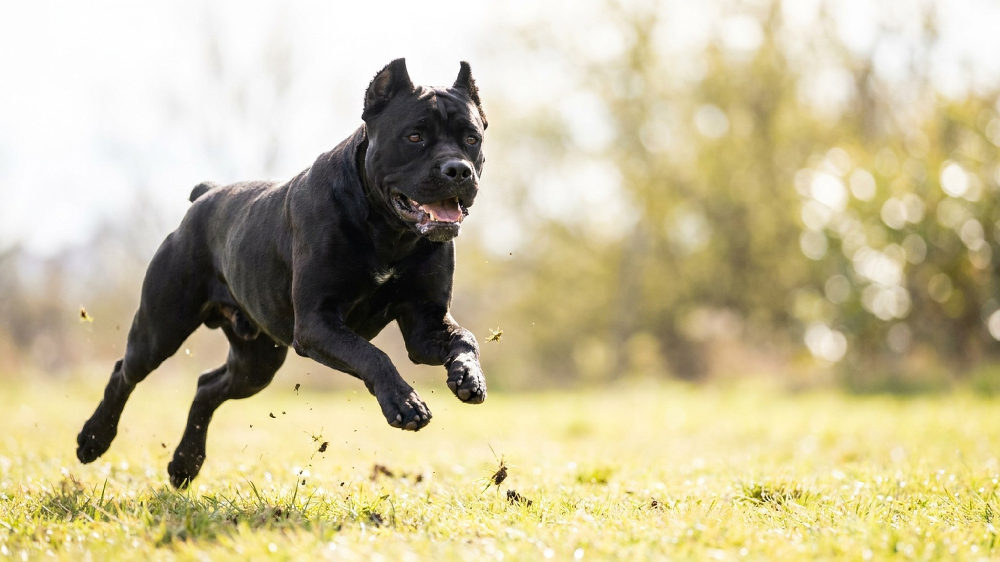

Кане-корсо: как вырастить охранника семьи, а не источник угрозы

30 июня 2026 · 3 минуты чтения · Воспитание
Щенок кане-корсо в 8 недель весит 6–8 кг и выглядит как плюшевая игрушка. Через год это 45–50 кг мышц с охранным инстинктом и собственным мнением о незнакомцах. Разрыв между этими двумя точками заполняется не добротой и не жёсткостью — а конкретной работой в первые 4–6 месяцев. Что именно делать — по пунктам.
Характер породы: что важно понять до начала
Кане-корсо — не немецкая овчарка и не лабрадор. Это охранная порода с тысячелетней историей работы рядом с человеком — и без него. Для корсо характерны: высокая доминантность, территориальность, сдержанность с чужими и глубокая привязанность к семье. Порода не агрессивна сама по себе — но она обладает силой и уверенностью, которые без управления легко превращаются в проблему.
Ключевое: корсо читает иерархию. Если хозяин не занял позицию лидера спокойно и последовательно — собака займёт её сама. Не из злости, а потому что так работает порода.
Ранняя социализация: окно закрывается в 4 месяца
Критический период социализации у собак — с 3 до 12–16 недель. У кане-корсо он жёсткий: то, что не было показано щенку в этот срок, будет вызывать настороженность или реакцию на протяжении всей жизни. Программа минимум до 4 месяцев:
- Разные люди: дети, пожилые, люди в форме, с зонтами, в очках — в спокойной обстановке и с позитивным подкреплением.
- Разные звуки: транспорт, лифт, фейерверк в записи, строительный шум — постепенно, без стресса.
- Другие собаки: управляемые встречи со спокойными взрослыми собаками, не с хаотичной стаей на площадке.
- Смена мест: торговый центр, ветклиника (без процедур — просто зайти и выйти), транспорт.
Цель — не «познакомить со всем», а сформировать базовую установку: мир предсказуем и не опасен по умолчанию.
Границы и нагрузка: ежедневная работа
Кане-корсо нуждается в чётких правилах и физической нагрузке одновременно. Одно без другого не работает.
- Границы с первого дня: щенок не заходит в комнаты без разрешения, не прыгает на людей, уступает дорогу в дверях. Правила одинаковые для всех членов семьи — разнобой порода считывает как слабость иерархии.
- Нагрузка по возрасту: до 6 месяцев — короткие прогулки и игра, без длинных пробежек (суставы формируются). С 1 года — 1,5–2 часа активности в день: апортировка, трекинг, управляемые игры.
- Послушание как ежедневный ритуал: 10–15 минут базовых команд каждый день важнее редких занятий с кинологом раз в неделю. Корсо запоминает быстро, но быстро и проверяет, работают ли правила сегодня.
Типичные ошибки владельцев кане-корсо
- «Он должен быть злым.» Целенаправленное поощрение агрессии к людям — самая опасная ошибка. Охранный инстинкт у породы есть от рождения; задача хозяина — научить собаку управлять им, а не усиливать.
- «Пусть вырастет, тогда займёмся.» В 1,5 года кане-корсо уже сформирован. Воспитание взрослой несоциализированной собаки весом 50 кг — совсем другая задача, несопоставимая по сложности.
- «Жёсткость — это авторитет.» Физические наказания у доминантной породы дают обратный эффект: либо страх и непредсказуемость, либо открытый конфликт. Авторитет строится через последовательность и спокойную уверенность хозяина.
- Изоляция вместо социализации. «Охранная собака не должна дружить с чужими» — логика, которая создаёт собаку, опасную для всех, кроме одного человека.
🐾 Питомец ведёт себя странно?
AnimaLife расшифрует поведение кошки и собаки и подскажет, что делать. Попробуйте бесплатно прямо в мессенджере.
Открыть в Telegram → Открыть в MAX →
🐾 Понравился разбор?
Подпишитесь на канал — каждый день разбираем по одному тревожному симптому у кошек и собак: что в пределах нормы, а когда пора к врачу. Подпишитесь, чтобы не пропустить разбор, который может спасти здоровье вашего питомца.
Материал носит информационный характер и не заменяет очную консультацию ветеринара.
← Все статьи · Открыть AnimaLife в Telegram · RSS